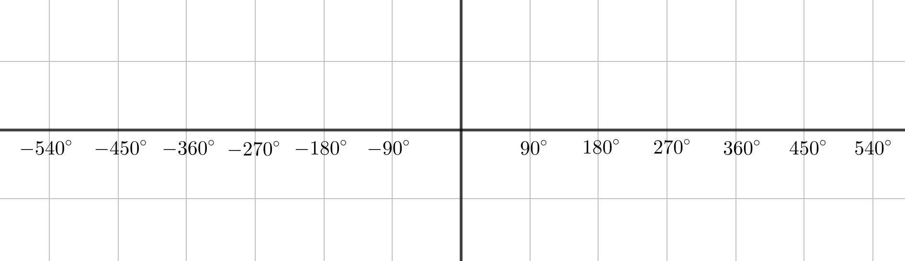
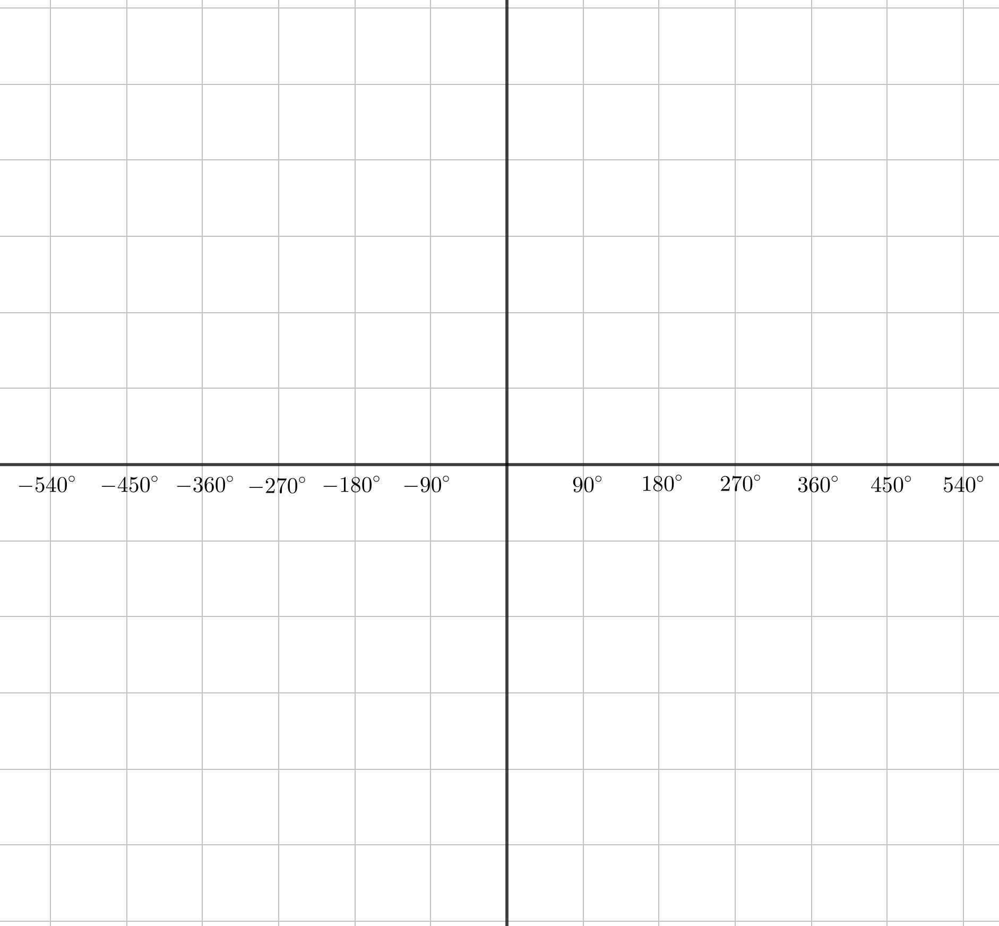
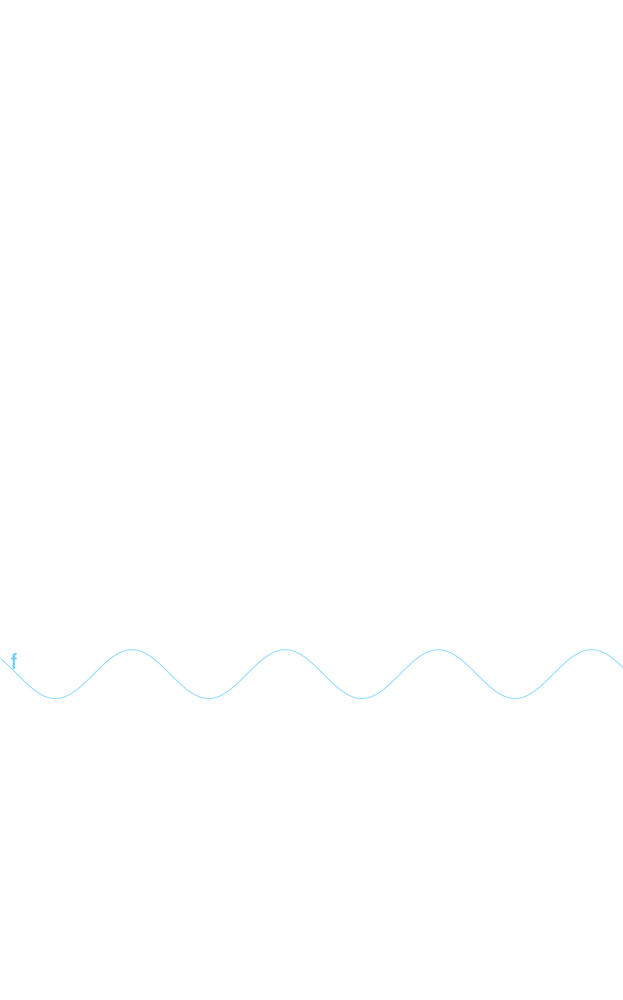
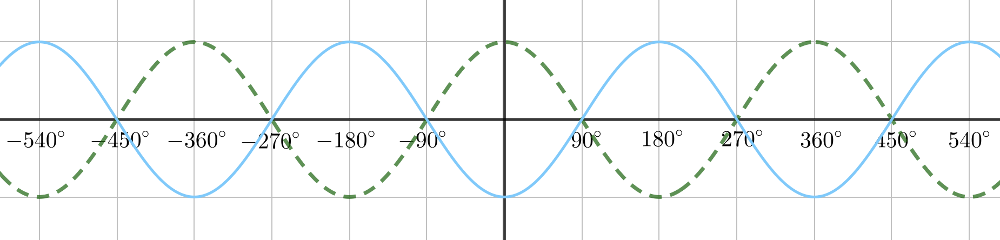
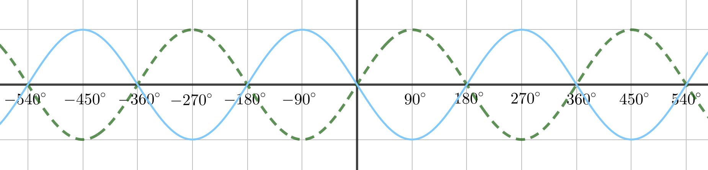
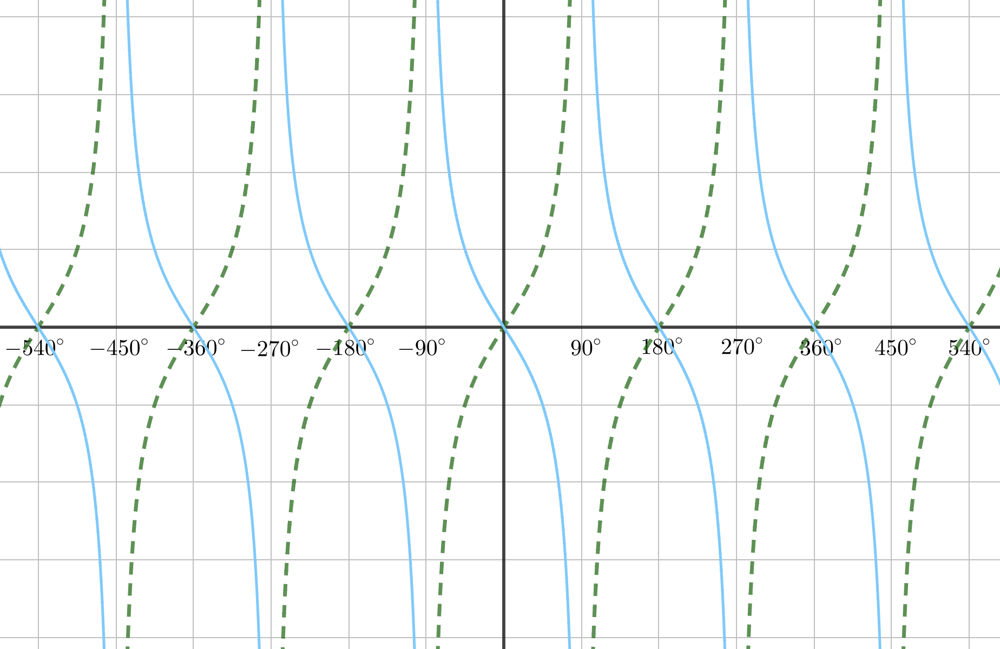

Draw \(y = -\sin x\) and \(y = \sin(-x)\).
Consider what happens when you reflect the sin graph in the x-axis and in the y-axis.
Draw \(y = -\sin x\) and \(y = \sin(-x)\).

Notice that \(y = \sin(-x)\) is the same as reflecting \(y = \sin x\) in the y-axis, which gives \(y = -\sin x\).
This shows us that \(\sin(-x) = -\sin x\).
Draw \(y = -\cos x\) and \(y = \cos(-x)\).
Consider what happens when you reflect the cos graph in the x-axis and in the y-axis.
Draw \(y = -\cos x\) and \(y = \cos(-x)\).

Notice that \(y = \cos(-x)\) is the same as \(y = \cos x\). The cosine function is symmetric about the y-axis.
This shows us that \(\cos(-x) = \cos x\).
Draw \(y = -\tan x\) and \(y = \tan(-x)\).
Students should notice that reflecting the tan graph in the x-axis and reflecting it in the y-axis give the same result.
Draw \(y = -\tan x\) and \(y = \tan(-x)\).

Notice that reflecting the tan graph in the x-axis and reflecting it in the y-axis give the same result.
This shows us that \(\tan(-x) = -\tan x\).
Fundamental identities from these transformations:
\[\sin(-x) = -\sin x\]
\[\cos(-x) = \cos x\]
\[\tan(-x) = -\tan x\]
Draw \(y = \sin(90° - x)\) and \(y = \cos(90° - x)\).
The easiest approach here is to use values rather than compound angles or transformations. Encourage students to calculate specific values like \(\sin(90° - 0°)\), \(\sin(90° - 30°)\), etc.
Draw \(y = \sin(90° - x)\) and \(y = \cos(90° - x)\).

Notice that \(\sin(90° - x) = \cos x\) and \(\cos(90° - x) = \sin x\).
Draw \(y = \sin(90° + x)\) and \(y = \cos(90° + x)\).
These exercises help students discover the complementary angle relationships through graphical exploration.
Draw \(y = \sin(90° + x)\) and \(y = \cos(90° + x)\).

Use these graphs to find some relationships between sin and cos.
Key Identities:
\[\sin(90° - x) = \cos x\]
\[\cos(90° - x) = \sin x\]
\[\sin(90° + x) = \cos x\]
\[\cos(90° + x) = -\sin x\]
\[\sin(-x) = -\sin x\]
\[\cos(-x) = \cos x\]
\[\tan(-x) = -\tan x\]
Show that \[\tan \theta + \frac{1}{\tan \theta} = \frac{1}{\sin \theta \cos \theta}\]
This is a good opportunity to discuss proper proof formatting for exams. Students often use \(\Rightarrow\) when they should use \(\Leftrightarrow\) or work from one side to the other.
Common student errors include:
Show that \(\displaystyle\tan \theta + \frac{1}{\tan \theta} = \frac{1}{\sin \theta \cos \theta}\)
Proper exam-style proof (starting from LHS):
\[\begin{aligned} \text{LHS} &= \tan \theta + \frac{1}{\tan \theta}\\[12pt] &= \frac{\sin \theta}{\cos \theta} + \frac{\cos \theta}{\sin \theta}\\[12pt] &= \frac{\sin^2 \theta + \cos^2 \theta}{\sin \theta \cos \theta}\\[12pt] &= \frac{1}{\sin \theta \cos \theta}\\[12pt] &= \text{RHS} \end{aligned}\]This shows the "proper" format that examiners expect: start from the left-hand side and work step-by-step to reach the right-hand side.
It's important to discuss when identities are not well-defined. In this case, both sides are undefined when \(\theta\) is a multiple of \(90°\).
The identity holds for all values of \(\theta\) where both sides are defined, but students should be aware that there are restrictions on the domain.
For what values of \(\theta\) is this identity not defined?
The identity is undefined when \(\theta\) is a multiple of \(90°\) (or \(\pi/2\) radians), because:
Show that \[\frac{\cos \theta}{1 + \sin \theta} = \frac{1 - \sin \theta}{\cos \theta}\]
There are multiple approaches to this proof:
Encourage students to try multiple methods.
Show that \(\displaystyle\frac{\cos \theta}{1 + \sin \theta} = \frac{1 - \sin \theta}{\cos \theta}\)
Method 1: Cross-multiplication
\[\begin{aligned} \frac{\cos \theta}{1 + \sin \theta} &= \frac{1 - \sin \theta}{\cos \theta}\\[12pt] \cos^2 \theta &= (1 + \sin \theta)(1 - \sin \theta)\\[12pt] \cos^2 \theta &= 1 - \sin^2 \theta\\[12pt] \cos^2 \theta &= \cos^2 \theta \quad \checkmark \end{aligned}\]Method 2: Rationalizing
\[\begin{aligned} \text{LHS} &= \frac{\cos \theta}{1 + \sin \theta}\\[12pt] &= \frac{\cos \theta}{1 + \sin \theta} \cdot \frac{1 - \sin \theta}{1 - \sin \theta}\\[12pt] &= \frac{\cos \theta(1 - \sin \theta)}{1 - \sin^2 \theta}\\[12pt] &= \frac{\cos \theta(1 - \sin \theta)}{\cos^2 \theta}\\[12pt] &= \frac{1 - \sin \theta}{\cos \theta}\\[12pt] &= \text{RHS} \end{aligned}\]Show that \(\displaystyle\frac{\cos \theta}{1 + \sin \theta} = \frac{1 - \sin \theta}{\cos \theta}\) using a geometric approach.

Geometric proof using angle in semicircle:
Consider a semicircle with diameter along the horizontal axis. An angle \(\theta\) at the circumference subtends a right angle at any point on the semicircle.
The diagram shows two similar triangles (pink and blue). The sides are labeled:
By similar triangles, the ratios of corresponding sides are equal, giving us the required identity.
This geometric approach can be adapted for obtuse and reflex angles as well. It provides a beautiful visual proof that complements the algebraic methods.
Show that \[\frac{\sin \theta - \cos \theta + 1}{\sin \theta + \cos \theta - 1} \equiv \frac{1 + \sin \theta}{\cos \theta}\]
The \(\equiv\) symbol means "is identically equal to" or "is equivalent to". It emphasizes that this is an identity that holds for all values where both sides are defined.
Both fractions are undefined for odd multiples of \(90°\).
Show that \(\displaystyle\frac{\sin \theta - \cos \theta + 1}{\sin \theta + \cos \theta - 1} \equiv \frac{1 + \sin \theta}{\cos \theta}\)
Using substitution \(s = \sin \theta\) and \(c = \cos \theta\) to simplify notation:
\[\begin{aligned} \text{LHS} &= \frac{s - c + 1}{s + c - 1}\\[12pt] &= \frac{s - c + 1}{s + c - 1} \cdot \frac{s + c + 1}{s + c + 1}\\[12pt] &= \frac{(s - c + 1)(s + c + 1)}{(s + c - 1)(s + c + 1)}\\[12pt] &= \frac{s^2 + sc + s - sc - c^2 - c + s + c + 1}{(s + c)^2 - 1}\\[12pt] &= \frac{s^2 - c^2 + 2s + 1}{s^2 + 2sc + c^2 - 1}\\[12pt] &= \frac{s^2 + 2s + 1 - c^2}{s^2 + c^2 + 2sc - 1}\\[12pt] &= \frac{(s + 1)^2 - c^2}{1 + 2sc - 1}\\[12pt] &= \frac{(s + 1)^2 - c^2}{2sc}\\[12pt] &= \frac{(1 + s)^2 - (1 - s^2)}{2sc}\\[12pt] &= \frac{1 + 2s + s^2 - 1 + s^2}{2sc}\\[12pt] &= \frac{2s + 2s^2}{2sc}\\[12pt] &= \frac{2s(1 + s)}{2sc}\\[12pt] &= \frac{1 + s}{c}\\[12pt] &= \frac{1 + \sin \theta}{\cos \theta}\\[12pt] &= \text{RHS} \end{aligned}\]This is a challenging proof that requires careful algebraic manipulation. The key insight is recognizing that \(s^2 + c^2 = 1\) can be used to simplify expressions.
There's some personal style choice involved in whether to use \(\equiv\) or \(=\) throughout the working. As long as students are consistent and correct, either is acceptable.